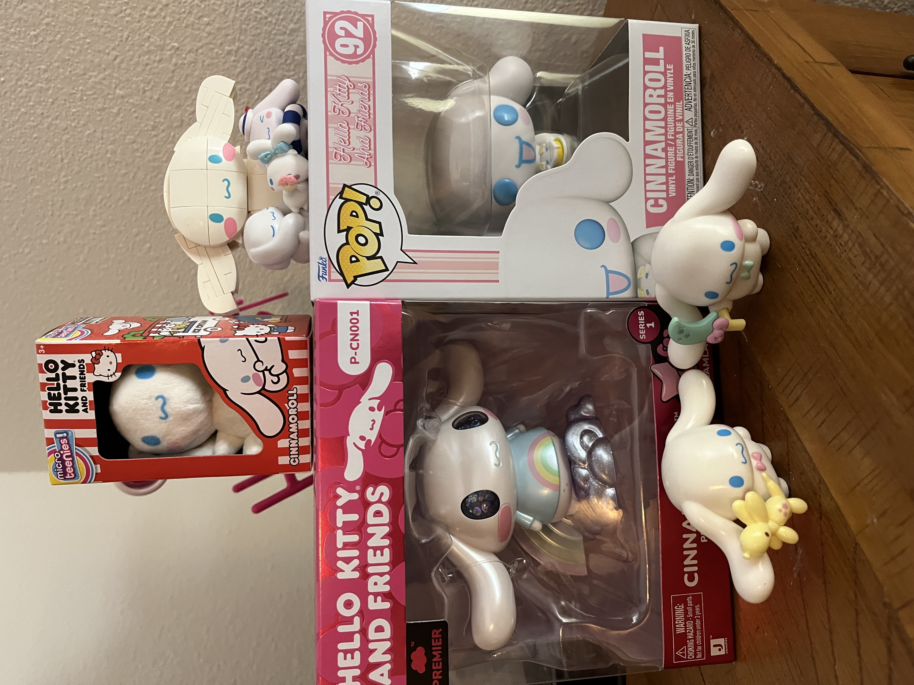

- Cinnamoroll has won the Sanrio Popularity Contest four years (2020-2024) in a row!
- Cinnamoroll is not a rabbit. He is a dog and uses his big ears to fly.
- His father is the sun, and his mother is the sky.
- His birthday is March 6th.
- His name comes from his cinnamon roll shaped tail.

Many Cinnamoroll figurines!